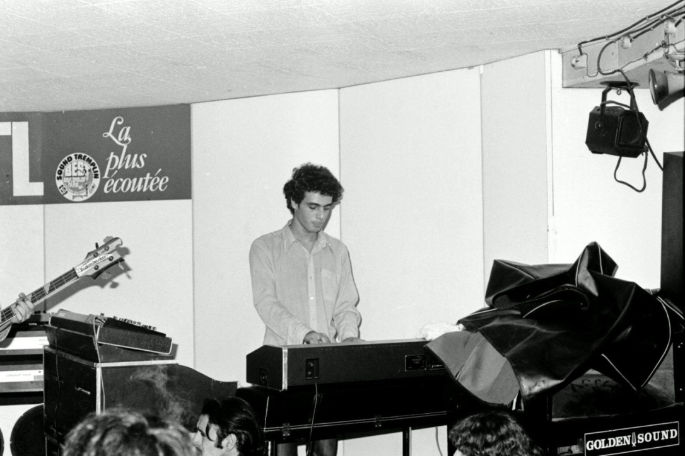
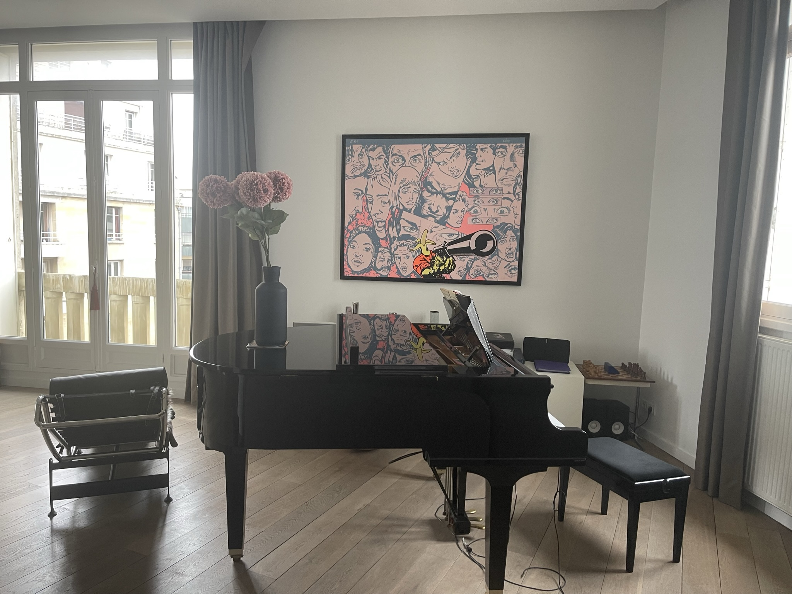
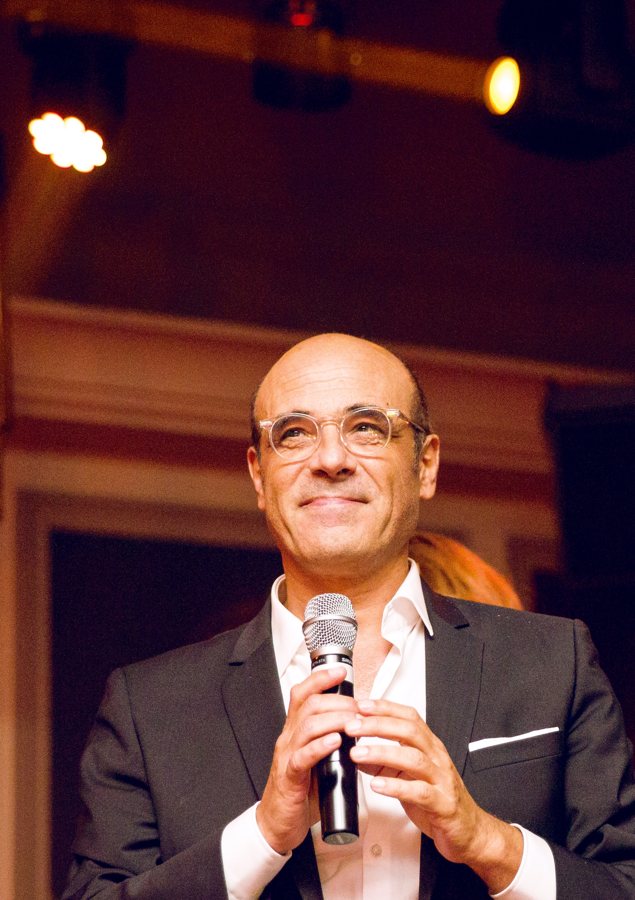

La musique est entrée très tôt dans ma vie.
Elle est arrivée par ma mère, par ses mains posées sur mon enfance, par ce piano vers lequel elle m'a conduit lorsque j'avais six ans. De ces premières années, il me reste surtout une image : un petit garçon en costume gris, un grand piano à queue, une scène de conservatoire, et mes parents dans la salle, venus l'applaudir. Peut-être que tout a commencé là, dans ce mélange de trac, de lumière et d'amour.
Depuis, la musique ne m'a jamais quitté.

Elle a traversé mon adolescence comme une force vive. Les années 70 et 80 furent pour moi un territoire d'exploration : le rock, le hard rock, le rock progressif, le disco, le funk, le jazz-rock. J'aimais cette époque où la musique osait les longues traversées, les ruptures, les envolées, les climats. Yes, Genesis, et tant d'autres, m'ont appris qu'une chanson pouvait devenir un voyage, qu'un thème pouvait ouvrir un paysage, qu'une mélodie pouvait contenir une part de destin.
J'ai joué dans des groupes, j'en ai fondé, j'ai cherché ma place dans ce grand courant sonore qui m'emportait. À dix-sept ans, j'ai rejoint Skryvania, l'un des groupes français de rock progressif alors remarqués. Nous avons enregistré un album qui a trouvé des auditeurs bien au-delà de nos frontières, jusqu'en Asie, en Russie, et auprès de passionnés dispersés dans le monde.

Puis la vie a suivi son cours, mais la musique est restée.
Elle a accompagné mon parcours professionnel, mes images, mes films, mes publicités, mes intuitions. J'ai composé pour des spots, pour des projets, pour des instants qui réclamaient une couleur, un souffle, une émotion. Toujours, la mélodie m'a guidé. Pianiste de formation, je crois avoir gardé en moi cette conviction simple : une mélodie juste peut dire ce que les mots approchent seulement.

Ce qui nous lie est mon premier album personnel.
Il arrive tard, peut-être. Mais il y a des choses qui mûrissent longtemps avant d'oser se donner. Il n'y a pas d'âge pour ouvrir une porte que l'on portait en soi depuis toujours. Cet album est né de ce besoin : rassembler des traces, des élans, des souvenirs, des questions, des fidélités. Dire quelque chose de la vie, de l'amour, de la paix, de la lumière, de ce qui se perd parfois, et de ce qui demeure.
J'ai voulu un album à la fois joyeux et profond. Un album qui chante, mais qui pense aussi. Un album qui ne cherche pas à expliquer, mais à transmettre. Les paroles diront mieux que moi ce qui m'a traversé. Elles parlent de liens, d'espérance, de fragilité, de volonté d'aimer, de liberté intérieure. Elles parlent de ce fil invisible qui nous relie aux autres, à notre histoire, à nos absents, à nos rêves, à ce que nous tentons encore de construire.
Les chansons ont d'abord été enregistrées en studio, dans le geste vivant de la musique. Elles ont ensuite été retravaillées avec l'intelligence artificielle, non pour remplacer l'intention, mais pour l'élargir. Cet outil m'a permis d'ouvrir davantage les orchestrations, d'explorer des styles, d'affiner des climats, de donner à chaque morceau l'espace sonore qu'il appelait. L'IA, ici, n'est pas l'origine : elle est un atelier nouveau, une chambre d'échos, un prolongement offert à l'imaginaire.
Avec Ce qui nous lie, j'ai le sentiment de commencer.
Commencer à mettre en musique tout ce qui, depuis longtemps, cherchait sa forme : des idées, des désirs, des souvenirs, des convictions, des questions. Commencer à faire entendre une voix qui a beaucoup composé pour les autres, et qui aujourd'hui accepte de parler en son nom.

Cet album est un premier pas. Un premier signe. Peut-être le début d'une longue aventure.
Il appartient désormais à ceux qui l'écouteront.